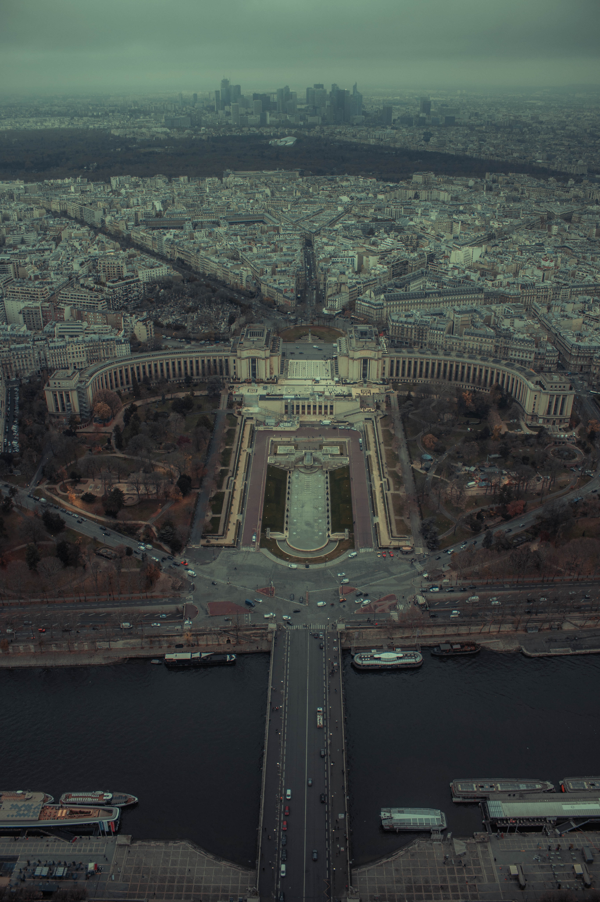

Paris

Info
Paris ist die Hauptstadt von Frankreich.Es hat 2.145.000 Einwohner und eine Fläche von 105,40 km².
Meine Erfahrungen
2018 sind wir mit dem Auto nach Paris gefahren. Wir wollten mein Onkel wieder sehen. 9 Stunden später sind wir, bei meinem Onkel angekommen und haben bei ihn übernachtet. Nächsten Tag am Morgen haben wir Frühstück in einer Bäckerei gegessen. Es war, dass beste Frühstück wo ich jemals gegessen habe. Nach denn Frühstück haben wir den Eifelturm besucht. Der Eifelturm ist am Renovieren gewesen, deshalb konnten wir leider nicht nach oben. Dann sind wir denn Fuente de los Jardines del Trocadero besuchen gegangen. Es war sogar besser als der Eifelturm. Am Abend haben wir noch gefeiert und sind am nächsten Morgen nach Belgien gefahren. Dort wartete, der beste Freund meines Vaters.
Wie sehr lohnt sich eine Reise nach Paris?
- Anreise: 7/10
- Wir sind mit Auto nach Paris gefahren aber man kann auch ein Flug nach Paris nehmen und dauert nur 1h.
- Die Location: 10/10
- Super viel zu sehen, Sehr sauber und sehr schön. In der Stadt hat es sehr viele Sehenswürdigkeiten.
- Spaßfaktor: 7/10
- Das Frühstück ist sehr fein gewesen. Es war sehr spannend den Eifelturm in echt zu sehen.
- Wohlfaktor: 7/10
- Die Leute waren freundlich und hilfsbereit. Ich habe mich sehr wohl gefühlt aber die Leute haben eine andere Sprache gesprochen.
- Hin Faktor: 6/10
- Ich will wieder hin, aber ich könnte es auch verzichten.